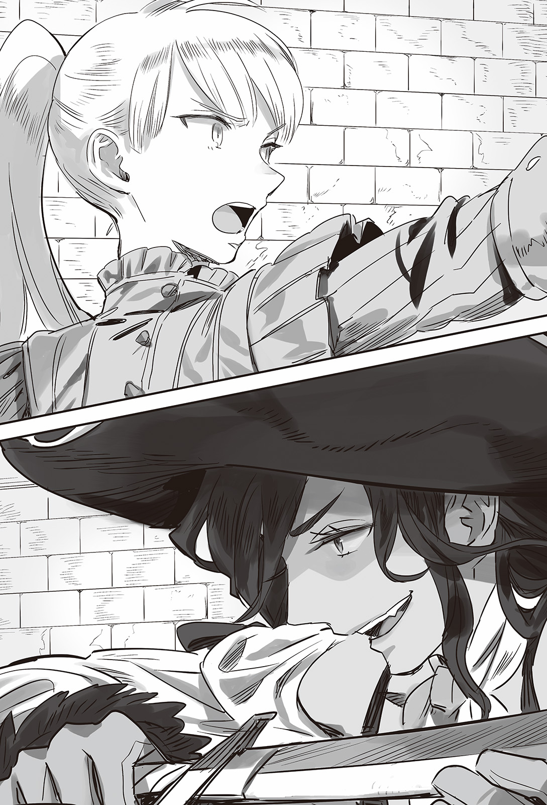

Chapter 4 – The Day of Coronation
.
Part 1
Urraca returned to the home port of Majorca Kingdom with great vigor and then she headed to the capital of Sanjuan Kingdom, Cadiz on her feet.
Urraca couldn’t think of anybody else than Maria to consult with, although it was like a fly in ointment how she would make fun of her as she pleased.
「──Maria-nee! Lend me your help!」
「Ufufu……Urraca-chan, I know you will ask me that!」
Maria welcomed her with a wide smile. Regret flashed at the back of Urraca’s mind the moment she saw her expression, but right now wasn’t the time to worry about that.
「I thought that this would happen!」
For some reason Maria twisted her waist exaggeratedly and pointed her hand toward the door.
「So I have called for a reassuring ally!」
Urraca turned her surprised gaze toward the opened door. An embarrassed looking Selina and Rachel appeared from there.
「Maria-sama, I still haven’t actually agree with it y’know.」
「Though of course, we don’t have any intention to deliberately get in the way……」
「Even though you two say that, you have actually waited until now for Urraca-sake aren’t youu~~!」
Selina and Rachel had finished their preparation for the wedding ceremony and arranging the transfer of control of the company. After that they planned to depart to Trystovy immediately, however they had delayed their schedule until now to wait for Urraca’s arrival.
Urraca who was a maiden at heart was greatly moved just from that and hugged the two.
「Both of you! Thank you!」
「……It will be Baldr who make the decision y’know.」
「Baldr needs Urraca-sama’s existence.」
「Ooou! It’s really a sight for the sore eyes seeing three big breasted beauties hugging like that~~」
Maria was breathing roughly while enjoying the nutrition for her eyes with how three different types of big breasts were pressed and changing shape painfully against each other.
To obtain a new attribute when she was at this age, Maria, how terrifying!
「Yep yep, it feels good to do a good deed!」
Her husband Carlos was aware that she was undoubtedly acting as her desire drove her to, but he never actually thought to stop her.
Because while it looked like Maria was acting impulsively, she always brought a result that benefited everyone involved.
.
Urraca got into the horse carriage that Selina prepared and sat down heavily in front of Selina and Rachel.
「It might be too late to ask this, but is it really alright?」
Urraca had gotten acquainted to Selina and Rachel quite closely since they came to Sanjuan Kingdom. However she didn’t think that they had become that close with each other.
It was natural for her to be puzzled of why these two were being this cooperative.
「To be honest, it’s not like I’m completely alright that the number of Baldr’s women is increasing.」
「However Baldr-sama’s position has become completely different compared to when he was still just Viscount Antrim and the heir of Count Cornelius. Baldr-sama currently need Urraca-sama. It’s frustrating but, he need you even more than me.」
Seyruun was a maid who had served Baldr since he was really small so she was in a different category, while Silk and Satsuki and even Agatha were each shouldering a role that was indispensable for Baldr.
Selina was also a heroic woman who was supporting Baldr financially as a cornerstone of Dowding Group.
But Rachel couldn’t think of any use she had other than her status as an adopted daughter of Nordland emperor.
In addition she was used to the reality of a royalty marrying multiple women.
Thinking from her perspective as a former Mauricia princess, the royal family that Baldr was trying to build needed even more blood ties.
No matter which country, the royal family wouldn’t consist of just the king and the queen.
The king’s brother, cousin, the duke houses with thick blood relationship with the royal family, all of them were functioning as the bulwark that protected the royal family.
In Mauricia, William, Edward, and other relatives fulfilled such function.
However presently in Trystovy Kingdom, the royal family only had Baldr and Silk. This was abnormal for a royal family.
Baldr had a little brother and little sister, but they couldn’t be listed as the people of Trystovy Kingdom.
Rachel thought that the current Trystovy royal family’s bloodline was too thin and relied completely on Baldr’s charismas as hero.
Even Selina who would become a concubine after this was forced to accept Baldr’s woman relationships that continued to increase even though she was disgruntled by it.
It was her trust toward Baldr that was giving her a push for that. After all he was still proposing marriage to her even after his status had grown where he became someone that originally she wouldn’t be able to marry.
「When the trade with Oustralis Continent is getting up speed, the importance of Marmara Sea is going to multiply rapidly. At that time Urraca-sama’s power will be even more necessary than now.」
「It’s not like I don’t get that but……I mean, you know, aren’t you jealous or something?」
「Because, just being able to marry is already an unexpected happiness for me……of course, I will feel desolate if I get neglected, but I believe in Baldr-sama.」
「Maria-sama has told us about Urraca-san’s story thoroughly y’see. So we can’t just think of this as none of our business.」
「M-Maria-nee did? What in the world did she tell you two!?」
「This is Parma’s special medicine that will make you sleep instantly if you sniff it. Don’t worry, everything will be over by the time you wake up……guu」
「STOOOOOOOOOOOOOOOOOOOOOOOOOOOOOOOOOOOOOOOOOOOOOOOOOOOOOOOOPP!」
「No matter what kind of child they will be, I’m confident that I’ll be able to love them if they are your child!」
「PLEASE, DON’T SAY ANYMOREEEEEEEEEEEEEEEEEEEEEEEEEEEEEEEEEEEEEEEE!」
Urraca’s tanned skin was dyed red and she rolled around inside the carriage.
A black history was always raw and embarrassing to recall.
She didn’t comprehend it at that time, but now she understood just what in the world she had spewed out at that time.
Even now Urraca remembered it clearly how Maria interrogated her for nearly an hour and how she writhed around on her bed for a while after that.
Or rather, even though she didn’t know the meaning of「Mess up my xxxx with your xx」, her own ignorance made her wanted to enter a hole if there was one.
The mannish Urraca whose physical strength was like an elephant compared to Selina and Rachel who were like ant was being teased by them. It was a rare and delightful scene.
Once they had opened their heart to be frank with each other, what was left were young maidens at that age. They engaged in a lively romantic conversation while heading toward Trystovy.
.
Occasionally people with historical role would be followed around by strange coincidences.
The greatest example of that was Baldr himself, but his wives also weren’t an exception.
It wasn’t a coincidence but an inevitability──a phenomenon that would be called like that by the later generation was approaching the group right now.
「Wait a sec.」
Selina asked the coachman to slow down the carriage with a gaze of suspicion.
Her clear hazel colored eyes were fixed on the caravan at the front that was flying the flag of Dowding Company.
「Oh, they are……the carriages of Hewrick Company aren’t they?」
「That’s not the problem. Rachel, look over there.」
「Eh……don’t tell me……」
Rachel noticed what caught Selina’s attention and her complexion worsened.
「What’s the matter you two?」
「Y’see, the traders who are handling our products will be given a special Dowding Company’s flag depending on their trustworthiness. After all it’s easy to get preferential treatment for those with that flag right now ‘cause we got main offices in a lot of country right now.」
A company that was connected with Dowding Company that was at the peak of its popularity. It gave a company enough additional value to their brand just from being considered like that.
In addition by flying the flag of Dowding Company, they would get a lot of convenience when going in and out of many countries. Because of that a lot of companies that had dealing with Dowding Company were eager to be entrusted with such flag.
「That caravan seems to belong to Hewrick Company of Mauricia Kingdom, they’re a mid-level company whose forte lie in goods distribution. They’re even entrusted with some important products to transport.」
「──So they are reliable merchants?」
Then what’s the problem , Urraca asked with a tilt of her head.
Urraca possessed genius level discernment on the sea, but it seemed that it wasn’t really the case on land. All the more so when the talk was about company business.
「This matter can also affect our own reputation y’see. So there’re only very few people who got taught about the secret symbol of the flag.」
「For example, if the lower right of the flag is scorched, it’s a signal for asking for help. A folded flag mean they are travelling incognito because of some circumstance──but」
Rachel spoke with a grave expression. Selina continued after her.
「In case when they lowered the new flag and used the old flag──it signaled the worst case. It means that the caravan has gotten completely taken over. If a caravan of that size is taken over……」
It was a small group that consisted of thirty people. Furthermore their destination was also Trystovy Kingdom.
It smell really suspicious.
Most likely they were the covert operatives of the church, or perhaps Answerer Kingdom. Furthermore they were trying to make use of Dowding Company’s name.
「……That bunch is quite something yeah? They don’t have any opening.」
Glymur who was listening to the three’s conversation from the middle was sending a sharp gaze toward the caravan.
The watchfulness of the coachmen, the nonchalant feel of the crews.
From a glance it looked like there wasn’t anything wrong with them, but they were actually giving off a calm presence that could deal with anything that happened from any direction.
A former mercenary like Glymur who was used with battle among small forces could sense that this bunch was quite used to the fighting scene.
「……This might be bad.」
That group might attack them if they realized that Rachel and Selina were in this carriage.
They were accompanied with a gathering of elite guards starting from Glymur, but in the end they only had eight people with them.
「──In short those guys are enemy right?」
「Well, nine of ten they are trying to mess with Baldr.」
「Hou……」
Urraca grinned with her canine exposed.
The aura she was wearing was already not that of a maiden who was teased by the other two until just now.
The Urraca who was a pure battle junkie just as her nickname Tormenta Negra suggested was right there.
「It’s the way of the sea to at least give a blow once when finding an enemy!」
Urraca had no intention of entering a losing battle, but the option of letting the enemy passed without doing anything when they were right in front of her didn’t exist for her.
「Are you serious?」
In the end Glymur’s employer was Selina.
It didn’t matter that Urraca was the navy minister of Majorca Kingdom. Glymur had no obligation to follow her instruction.
If there was a risk that Selina got exposed to danger because they rashly fought an unknown enemy, Glymur planned to stop Urraca even if he had to use brute force for it.
「You think we can’t win?」
「We won’t lose if we have equal number. But we got people that have to be protected at our side here.」
「I see, that’s true.」
Urraca agreed with Glymur’s words.
「Then you can just stay here to protect Selina and Rachel.」
「Wha-!」
「Wait, ya mustn’t lose your temper!」
「That’s right! The opponents are most likely elite assassins who are targeting Baldr-sama!」
「──You see, at the sea」
Urraca spoke up. Her words were quiet, however there was a deep confidence that was like rock accompanying them.
「Being able to once more meet an opponent who you have allowed to get away before is like a miracle. The sea is wide and the wind blow as it pleases. That’s why battle is inevitable the moment you encounter an enemy, there won’t be other chance than that time. I have lived like that all this time.」
Would they be able to forgive themselves if they overlooked this enemy here and by some chance something happened to Baldr?
That was impossible.
Rather than living with regret for their whole life, they should fight here. And then they would annihilate the enemy of their beloved Baldr without fail.
「We aren’t on sea right now. If we feel like it we can call for help right away y’know?」
「I wonder about that. Those guys will be able to arrive until Milliana without any problem if only Selina and Rachel don’t happen to be here today by a coincidence isn’t it?」
There were cases when a coincidence was an inevitability.
In battle there was a flow, it could also be rephrased as fate.
Those who let go of that fate would definitely be visited by bad luck later on. It could even be said as almost a certainty.
When it was time to fight, when lady luck was favoring them, one had to fight no matter what even if the situation actually looked very unfavorable.
Urraca had such conviction as a veteran warrior.
「──Glymur, we’re doing it.」
「Is it really okay?」
「I’m not gonna let that lot to mess up with our wedding!」
「I don’t really want to do it though……」
In contrast with his rough appearance, Glymur was a type of mercenary who was cautious and always made sure of the worth of doing something beforehand.
Even so, he was also a nasty man who enjoyed fighting in his own way when he had decided to fight.
「Let’s do it I guess.」
.
「──What’s wrong?」
「The carriage behind us is speeding up. Perhaps our camouflage has been exposed.」
One of the men who was watching the surrounding vigilantly from a carriage’s window was staring sharply at the approaching carriage of Selina and others.
「Just one carriage? From its appearance, it looks like the one riding it is quite rich……」
「Perhaps they saw Dowding Company’s flag and want to give a greeting to us.」
「I see……」
Bezel judged that the possibility of that was high.
The products of Dowding Company had a lot of fan among the dilettantes. It wouldn’t be strange for a rich person to want to use this chance to ask them to share their products even just for a little.
However it would also be troubling if someone like that was really trying to greet them. After all they were complete amateur in doing business.
「Let’s deal with them……」
It would be safer to dispose of those people rather than trying to trick them poorly and got suspected.
Fortunately this road was quite deserted. Any civilian who happened to be present here was powerless compared to them. It wouldn’t take them that much time to massacre all witnesses here.
Bezel decided that the passengers in the carriage approaching them were simply out of luck if they asked his group anything unnecessary.
It was then.
「──Your killing intent is leaking out you know?」
This woman──!
She had noticed their true colors. The black haired beauty’s provocative gaze was accurately telling him that.

Faster than Bezel making his decision to enter combat, Urraca threw the pipe grenade that Baldr also used at Mulberry.
「Unfortunately we also aren’t knight over here.」
「Run! This is──」
Bezel knew about this weapon from Martell’s report to the church. If the information wasn’t wrong, it had the same nature like the church’s holy relic.
But a crimson flame swallowed their carriage faster than his order could be followed.
「Ha haa! Looks like your true color is exposed.」
Urraca mocked them in delight.
She threw another grenade at the group that was jumping down the crumbling horse carriage in panic with swords in hands.
Her stock had run out with this second throw, but she succeeded in making more than half of Bezel’s force to be unable to fight.
「You cursed heretic! You won’t return alive!」
「I refuse. I won’t die until I give birth to Baldr’s child!」
「You bitch……so you are that beastma’s woman!」
A light of hope lit up in Bezel’s eyes.
It was a painful blow that their fighting strength was reduced, but there was still a chance for them it they could take an important person as hostage.
「Whoops, you can’t pass through here yeah?」
Glymur stood imposingly with a war axe in his hands to cover Selina and Rachel behind him.
He was a man who had struggled through many carnages of facing that Maggot as his opponent and survived.
Even if he was facing expert killers from the church, he had the confidence that they wouldn’t be able to pass him easily.
「Catch that woman!」
Most likely the women behind Glymur were also VIPs.
However the woman who declared that she would give birth to Baldr’s child couldn’t be ignored.
For better or worse, Bezel didn’t know Urraca’s face.
「Nice! You want to play with me?」
「You impudent!」
Multiple people surrounded Urraca, but nobody could capture Urraca who was standing on top of the horse carriage.
「What’s wrong? You won’t be able to be my opponent with that kind of timidity you know?」
「Shit! How can she keep her balance at that kind of place?」
Unlike horse carriage to transport people, a horse carriage to transport cargo only had cloth spread out to keep out the sunlight and rain.
Naturally standing on top of that would feel unstable like standing on trampoline, but Urraca who had constantly fought on shaky ship didn’t find it troubling for her at all.
Urraca boldly danced like a fish that had gotten into water and defeated the church’s assassins one after another.
「Don’t approach her carelessly! Surround her from a distance and shot her with arrows!」
Bezel noticed that fighting with unstable footing was Urraca’s forte and he gave up capturing her alive for the moment.
At this rate, his fighting force would be whittled until it became impossible for them to execute their mission.
At present only around ten of them could fight.
Even if the wounded managed to get back into fighting shape, their number still would be fifteen at most.
Their group of thirty had been halved. They couldn’t allow any more reduction than this.
「So you guys don’t have any plan of running. That’s praiseworthy at least.」
「I’ll at least leave you alive if you surrender obediently!」
「How?」
Urraca grinned fearlessly. Bezel glared at her murderously and ordered to fire the arrows.
「Shoot!」
It was a volley that Urraca should be unable to deal with.
It looked like her body would be pierced with arrows like a beehive, but then her figure suddenly vanished.
An instant later, the carriage shook with a dull impact.
「──Magic!」
It was simple if one knew the trick.
Urraca heated the canopy with magic and opened a hole for her to fall through. That was all.
Bezel felt overwhelmingly irritated that he himself couldn’t think up such simple escape method.
「She is going to come out! Don’t miss!」
「Too slow!」
The cloth was cut apart from inside and Urraca ran out like a bullet.
The carriage itself became an obstacle so that the other side couldn’t see what Urraca was doing.
In a single breath, Urraca had cut down two assassins that were readying their bow at the left side of the carriage.
Only eight people remained with this──.
「No, I mean five.」
There was no way a veteran mercenary like Glymur would miss the opening while the assassins were focused on Urraca.
He closed the distance to the assassins instantly and bisected an assassin at his waist with his huge war axe as though he was cutting vegetable.
The assassin group had been effectively annihilated faster than Bezel could grasp just what had happened.
He believed that he hadn’t let his guard down at all.
He also didn’t think that he had committed any fatal error with his instruction in battle.
「Impos, sible──」
And yet why was them, the elites of the church had to be cornered like this against just a single woman and a man who seemed to be a mercenary.
「I’ll tell you as souvenir for the afterlife.」
Urraca guessed what Bezel was thinking from his expression of refusal and she laughed.
「Dowding Company’s flag has a hidden meaning. The flag getting exchanged with the old flag means that the caravan has been taken over.」
「──So that’s how」
He finally understood why they were suddenly attacked without any hesitation.
They had been exposed as fake since the beginning and the opponent had prepared the fight to be in their advantage.
In contrast they were constantly at the receiving end and they could only leave the development of the fight wholly to chance until the very end.
「Incidentally I‘m Majorca Kingdom’s navy minister, Urraca de Parma. A woman who is going to be Baldr’s mistress.」
「Tormenta Negra……even if it’s just you at the very least-!」
There was no chance of victory anymore.
But Urraca’s existence was a precious one that Trystovy Kingdom couldn’t go without.
If he could take the woman with him to hell, it would at least become a hindrance Baldr.
Bezel’s skill as a warrior wasn’t inferior to Urraca.
Regardless of everything, he was a specialist of individual battle.
But unfortunately his opponent was too bad.
Urraca was a woman who admired Baldr’s strength and chased after his back. Furthermore she had also witnessed Maggot’s battle.
Urraca easily saw through the skill of Bezel who was a first class warrior but not one who had left the domain of the average human.
「It’s ridiculous that you are trying to take on Baldr with a skill of that degree.」
Urraca readied her sword horizontally with composure.
Then Urraca’s sword reflected the sunlight that was setting to the west.
It was Bezel’s negligence for attacking with the sun behind him.
Urraca accurately reflected the light to hit Bezel’s eyes and blinded him for an instant.
──*Zashu-!*
That instant was enough. Urraca whose body was strengthened brushed against Bezel’s right flank like a wind and tore apart his abdomen to her heart’s content.
「C-coward……」
「I don’t want hear that from you guys who killed unarmed merchants.」
「O god……forgive my powerlessness.」
Bezel expired with his expression twisted in regret. Urraca spat out a mutter at him.
「……Your god is a narrow minded god who treat life really lightly isn’t he? He doesn’t seem like someone who will tolerate failure at all then, so you better beg for mercy there.」
.
They were able to catch some of Bezel’s man alive.
Especially the assassins who fainted from the first grenade’s shockwave. They were almost completely unharmed.
「Even so, I wonder how these guys plan to kill Baldr.」
That was suspicious.
Certainly, it was an effective method to enter the country by taking over a merchant’s caravan. However it would be difficult to get close to Baldr by disguising themselves as a medium level company like Hewrick Company.
「……Feels like this will be a troublesome matter yeah?」
The one who answered Urraca who was making a complicated expression was Glymur who was searching the assassins’ carriages.
This man looked rough, but his personality was really careful and he did his jobs with attention to detail.
Urraca corrected her evaluation for Glymur with substantial upward adjustment.
「Did you find something?」
「……Perhaps your instinct is really something.」
Glymur said that and handed her a slightly charred letter. The detail about the schedule and route that King Welkin was using to enter Trystovy Kingdom were written.
Their target wasn’t Baldr, but Mauricia king Welkin.
If Urraca didn’t insist to attack the assassins right away, they would definitely set up an ambush on Welkin somewhere.
「I can’t believe that it’s Otou-sama……」
Although her name had been erased from the royal family registry, for Rachel, Welkin was still her father even now.
「I see, it’s a nasty plan……」
Selina reached the conclusion faster than everyone there.
Normally Rachel would be the one to notice it faster, but this time the target was her father Welkin. The shock that she felt was filling her mind completely.
「As expected, even Baldr will definitely get cornered if Mauricia Kingdom side with the church.」
「They want to kill Otou-sama inside Trystovy for that?」
「The lack of security inside Trystoyv will get criticized. Mauricia Kingdom’ll also fall into political chaos with the loss of the king. At the very least it’s possible Mauricia Kingdom will become neutral with this.」
Mauricia’s king was still Welkin. He was attempting to finish the reformation inside the country with his schemes and stubbornness. If a cornerstone like Welkin was gone, a political vacuum would obviously get formed in Mauricia Kingdom.
In the worst case, it wouldn’t be strange if Mauricia Kingdom proclaimed that Trystovy Kingdom was unforgivable for letting their king died pointlessly. Despite appearance, Welkin was a popular king.
This method could be said as a method with higher success possibility compared to aiming for Baldr directly.
「──The problem is where is this information about Otou-sama’s route came from.」
Her father almost got assassinated. Even a gentle person like Rachel couldn’t hide her anger as expected.
「There is a church’s spy in Mauricia Kingdom……that possibility exist but」
「That cunning old man seems like someone with a lot of enemy.」
Either way they couldn’t possibly ignore this.
If Welkin really got attacked, it would be suspect whether they could even continue with holding the wedding.
It would also be extremely troubling for Dowding Group if Mauricia Kingdom turned into enemy.
They wanted to know about what was going on behind the scene no matter what.
「──Can you leave this to me?」
It was here that Urraca showed a terribly cruel and cold smile that she didn’t show even during the battle just now.
「The sea is really an inconvenient place in all respect.」
Fresh water was precious, and alcohol was also precious there. There were few amusements on ship and they also had no delicious food.
The thing that they could bring in a long voyage was just the minimum necessity. Things that were essential for survival like food or water or oil were prioritized above all else.
Life on ship was a kind of an isolated environment.
But exactly because it was an environment where the people only had few tools and few pleasures where so many things were lacking that things that originally shouldn’t be created got created.
It was often said that necessity was the mother of invention.
When speaking of the only thing that was available in inexhaustible supply on sea, the answer was without a doubt seawater.
「Though, we don’t have any seawater here──let’s substitute it with salt water.」
「What are ya planning to do?」
「People like this are used to pain. They won’t say anything even if their fingernails are torn off. The mister mercenary over there also seems unskilled with torture.」
Selina and Rachel opened their eyes wide seeing the word torture easily came out from Urraca’s mouth.
It was unbelievable that this was the same woman who got teased a lot because of her completely maiden-like reaction toward Baldr.
「Well, that’s because my job is to send the opponent flying.」
「Living on ship is living in a terribly close community. After all if a ship sunk then everyone will die together. Because of that everyone is sensitive to betrayal and they often overdid it when dealing with such thing.」
A payback that made even death seemed lukewarm was waiting for a betrayal toward the community.
Urraca who had lived on the sea since she was a child had witnessed such occurrence many times.
「There is something that is even more painful than death for human. It’s something that makes them wish on their own to die quickly. Though it will be better if you don’t know about it.」
Urraca rummaged the random body of one of the unconscious assassins and grinned like a predator. Then she waved her hand so Selina and Rachel took some distance away.
「Ladies are forbidden to be present from here on.」
.
Part 2
──Dark.
A surviving assassin named Callisto woke up. The first thing that came in his mind was that.
He recalled a black haired woman throwing something toward him, then there was a flash and shockwave and he didn’t recall anything more.
How much time had passed?
No, in the first place what happened with his comrades after that?
Callisto tried to call for his comrades, but then he noticed that his mouth was stuffed with a cloth.
He couldn’t say anything. He couldn’t even move.
It seemed that he was tied really tightly on something like a chair.
(I’m captured……?)
That meant that his comrades had been defeated by that woman.
An elite who was chosen from among the church’s believers was captured helplessly like this.
(I’m left alive like this. Are they planning to interrogate me?)
He was intentionally left alive like this, so naturally the other side had an objective.
(Fool. They are really looking down on me if they think that I’ll talk even if I’m tortured.)
When he thought back of the agony that had been carved into his body from his training as assassin, the average torture would be trivial to endure. To say nothing that he would feel happy to die for the sake of his god. He could declare with his head held high that it was absolutely impossible for him to surrender to the torture of heretics.
──*Splash*
(Cold!)
Water fell on Callisto’s forehead.
That water seeped into the cloth stuffed in his mouth. Callisto noticed that it was salt water and tilted his head.
What were they doing?
He had prepared himself to get whipped. He had prepared himself to have heated iron pressed on his flesh.
He had resolved himself to not say anything even if his nail or teeth was pulled out.
And yet.
──*Splash*
Water dripped on his face again.
It seemed that water was dripping rhythmically on his face every ten seconds.
(Just what is the purpose of this……)
It didn’t hurt or even itchy. Rather with his eyes blindfolded so he could only see darkness like this, it felt like he had a lullaby sang to him.
He couldn’t understand the meaning of doing something like this at all.
──*Splash*
And then it continued for around an hour.
Salt water dripped down with a fixed rhythm.
At first the water only wet his face, but right now even his lower body had been soaked wet.
In addition he was unable to wipe the salt water that was dripping along his face. It felt unbearably unpleasant.
However despite the unpleasant feeling, it wasn’t really a big deal.
After all it wasn’t like his life was in danger or he was exposed to unbearable pain.
──*Splash*
Perhaps half a day had passed?
Callisto’s bodily sensation felt like a day had passed.
His sense of time was hazy. It felt like that he might have left here alone for several days.
The salt water still continued to drip on him rhythmically. Occasionally the drip of water changed into intense pain that was hard to endure.
Or rather than calling it intense pain, it was more like discomfort.
It was a discomfort that made him wanted to say that being stabbed with a sword was still better.
According to a theory, it was said that human brain couldn’t endure monotony where they were unable to feel other stimulation.
Human who was going through their daily live was constantly exposed to some kind of stimulation. The brain was working with that constant as the prerequisite.
It wasn’t really known widely, but actually brain was something that extremely hated boredom.
Simple stimulation that was repeated rhythmically would promote that even further.
This was the method called water boarding.
It was a type of water torture. It was a torture technique that especially affected only the mental aspect.
It had been performed even in China and Japan since the ancient time, but in the recent years it was also used by USA for interrogating terrorists that blew up to be a social problem.
It was a very simple method, but the effect was immense. A certain television program had tried doing it for real. It resulted in the target wailing and giving up after thirty minutes.
What was even more troublesome in this case was the usage of salt water.
The salt water that was dripping from above was absorbed into the cloth in Callisto’s mouth. Because of that Callisto could only allow the salt water to enter his throat.
──When someone got stranded on sea, drinking sea water was forbidden no matter how thirsty they were.
Human body was made to eject surplus salt content within the body.
However the salt content in seawater was higher than the salt content in human sweat and pee.
Because of that, when human drank seawater, no matter how much they expelled salt content through peeing, it would be fewer than the salt content that piled up inside the body.
The body would demand even more water to eject that salt content, but drinking seawater would only increase the density of salt content within the body.
The logic was the same like when human would get thirsty when eating a heavy ramen.
When this symptom worsened, the kidney would malfunction and became unable to process the waste products of the body. At the end it would build up osmotic pressure that disturbed even the blood’s function to transport oxygen and the person would die.
Most human would go crazy when going through that process.
(──Water! Give me water! Stop pouring salt water anymore!)
Water, water, water, water, water, water, water, water, water, water, water, water, water, water, water, water, water, water, water, water, water, water, water, water, water, water, water, water, water…….
It didn’t take that much time until Callisto’s t thought was filled with only that.
「────Do you want fresh water?」
He had no shame and self-respect anymore.
He didn’t give any damn about the identity of the person talking with him or what would be demanded from him in exchange of water.
Callisto was simply begging as his survival instinct was demanding him to do.
(Please! Water, quickly! I’ll do anything so give me water!)
The terrifying thing about this type of torture was how it made the victim’s mind mentally and physically hazy. Torture that was accompanied with pain that awakened the nerves’ sensitivity couldn’t do the same.
──*Splash*
(STOPPPPPPPPPPPPPPPPPPPPPPPPPPPPPPPPPPPPPPPPPPPPPPPPPPP!)
It was the limit.
His fear toward water.
And then his longing for water.
The two contradicting emotions were wearing down Callisto’s mind.
There was still no human who could endure this torture completely. The problem was whether the victim would break completely or not before the interrogator could extract the essential information.
──That was all.
「You want water right? Tell me where did you get the information about King Welkin from?」
The gag in Callisto’s mouth was slowly removed.
When fresh air flowed inside his mouth, Callisto sucked in all the air he could and shrieked.
「Water! Give me water!」
「Alright. I’ll let you drink as much as you want. But only after you give us information.」
「………………」
「You don’t want water?」
The sound *glug glug* echoed in his ears. Callisto writhed.
Callisto would be able to endure it if it was physical pain.
However the salt content density in his blood had risen and his whole body was attacked with weariness. With his brain that was lacking oxygen, his subconscious instinct won out.
「──Water!」
「Who leaked the information?」
「Bishop Bodin of Mauricia! He is connected with Duke Richmond!」
「The proof?」
「There is the letter from Bishop Bodin. I don’t know about Duke Richmond!」
「Very good. You can drink.」
Callisto devoured the water in the cup that was held to him.
He continued to drink two, three cups. Then finally Callisto took a breather and breathed with a lot of gasps. Urraca spoke coldly to him.
「You don’t want to go through the same thing anymore right? You should have realized that it’s not something that can be endured by something like resolve or faith.」
Callisto nodded powerlessly with the unforgettable fear that he had no way to forget.
He believed that there was nothing to fear in this world if he had faith to god.
However this day Callisto was made to learn that his belief wasn’t something absolute at all.
.
Part 3
Accompanied with Callisto who had completely become obedient, Urraca and co joined up with Welkin who was coming late to Trystovy two days later.
Selina used the information network that Dowding Group and Baldr shared.
Using the radio network that sent information in almost real time, acquiring Welkin’s location didn’t take much time.
They didn’t know whether the assassins they captured were the only group that got sent to kill Welkin or not. Because of that it was necessary to contact him as soon as possible.
「──It looks like I have become greatly indebted to everyone without noticing it.」
Welkin lightly bowed at Urraca after he heard about what had happened from Rachel.
「What, so ya already noticed.」
Selina didn’t overlook how Welkin didn’t look surprised at all.
「No no, I’m surprised. I never thought that someone like Richmond would rely on the church that easily.」
Did he think that he wouldn’t need to dirty his own hand if he moved the church?
If that was the case, then his foresight could only be called as extremely naïve.
From the start Welkin had been ready and waiting to sweep clean all potential discontented elements before Richard’s coronation by focusing all dissatisfaction on himself.
Duke Adolf Richmond, the leader of the bureaucrat nobles was the most valuable target. Originally someone like him should be more careful than everyone else and waited patiently until the storm passed.
It was a very happy miscalculation for Welkin that they were able to gather enough evidence to make him lost his standing like this.
「This too is thanks to the agreement of the multinational exchange rate. It’s the result of thinking that their vested interests are taken away without any hope of taking them back.」
Bureaucrats who could wield power within the country were fundamentally weak against outside pressure.
If that outside pressure came in the form of multinational agreement that would constantly interfered with their interest, the leader of the bureaucrat nobles Duke Richmond couldn’t possibly tolerate it.
If a bait that could solve all his problems with a single swoop was thrown in front of him at that timing, few human could possibly resist the temptation.
Even Duke Richmond who usually would be cautious made the wrong choice at this time only.
「Thanks to that I’ll be able to have good expectation for my task after this. Tell me if there is anything that I can do for you all, I’ll be of assistance.」
「──Just now, you said that you will be of assistance right?」
Urraca sensitively reacted to Welkin’s words like a tiger that had caught sight of a prey.
「I-if it’s something that I can do, okay?」
「Of course I don’t mind with that. Then I’ll ask you to tacitly consent and also help with me being Baldr’s mistress.」
「──Wwhaa?」
As expected from Welkin who had been at the center of government for so many years. He didn’t ask her why.
If he was the king of Majorca Kingdom, it would be impossible for him to pick the option of giving Urraca to another country no matter what.
This matter was a problem that concerned the defense and tradition of the country. It wasn’t something that could be permitted even if it was with an allied country.
However he never expected that Urraca would accept being a mistress.
He thought that the creature called woman should have dream for marriage a bit more than this.
「Are you fine with that Rachel?」
「Of course. I also ask your majesty to please also give your blessing to your daughter who you have coldly abandoned because you cannot tolerate her marriage with a beastman.」
「Aaaaaaaa, I didn’t have a choice. I’m begging you forgive me!」
Welkin became noticeably upset.
He too was harboring a deep guilt toward Rachel in his own way.
When Baldr publicly declared that he had beastman blood in him, the prospect of being able to recapture Trystovy quickly was small.
Welkin thought that the civil war would still continue for ten more years before Baldr finally won.
However he couldn’t possibly allow Rachel to stay unmarried until that long. In his position, there was no other way than to make her gave up on Baldr.
Baldr’s status and the political situation now that he was a victor were completely different from that time when he had just announced himself as the successor of the throne.
Even so Welkin moved behind the scene while letting Richard got the credit to help Rachel walked on the path that she wished for.
Although it wasn’t something that could be realized without Rachel’s strong determination to put everything she had on the line.
「At that time I did that for the sake of your happiness. No matter what there is no way anyone can possible predict that Trystovy will be completely conquered in just one year!」
That’s right.
In fact, without Valerie’s existence there was no way Baldr could win against the dukedom this quickly no matter how much strength he had.
Making the populace gave up on the nobles, sorting which nobles were the enemy and which were the ally, making all preparation to stop the archduke’s escape, Valerie had handed Trystovy to Baldr by doing all those.
As expected it was unreasonable to ask outsider like Welkin to predict something like that.
「Even so, I can’t forgive Otou-sama for trying to make me marry other man than Baldr-sama.」
「I-I wasn’t serious at that time! In the end it was just a stance that I have to pretend to take.」
「But Otou-sama will seriously make me marry if I actually acted obedient at that time right?」
「Well, perhaps.」
「As expected my only father is only father-in-law alone.」
「Why? Even though I love my daughters so much like this, why won’t Beatrice and Rachel and also Margaret be kind to me?」
「Ya are reaping what ya sow.」
「It’s your just desert.」
「Really.」
「NOOOOOOOOOOOOOOOOOOOOOOOOOOO!」
Perhaps in the end this was the fate of male parent. A male parent who was loved by his daughter was a rare breed. Harold seemed to be the one who once mentioned that.
Welkin cursed fate with the sorrowful wail of an unrewarded male parent.
「──I guess Otou-sama’s bullying is enough with this for now.」
「I’ll seriously cry you know?」
「It will be unsightly so please don’t.」
Welkin was seriously depressed by Rachel’s unreserved attitude.
Even a king was still a parent, not to mention he had a daughter this adorable. He naturally wanted to be loved dearly. He also wanted to be told something like「I want to marry Otou-sama in the future!」.
Being treated coldly by a daughter was dozens of times sadder than being treated coldly by a son.
「First please give Otou-sama’s support to Urraca-sama seriously. To be honest, a lot of things will be really problematic if Urraca0sama is taken by other man.」
「Ya are really blunt there.」
「I have no intention of giving my heart to any other man than Baldr!」
「It will also be troubling if you aren’t rewarded. Baldr-sama doesn’t have the disposition to get infatuated with yandere after all.」
「Kuh……why? Rachel’s figure look really big.」
Rachel who was born as a royalty had learned how to think as a royalty although she had decided to deviate from being a royalty and threw herself into pure love.
Putting aside whether it was possible or not, she was able to easily think up a number of tricks to seduce Urraca.
Someone innocent without any background knowledge like Urraca was easy to deal with using other way than direct violence in a sense.
「──Baldr-sama……is actually someone who can’t say no when all reasons to argue has been removed. In that sense we ourselves will have to be alert for that kind of thing from here on.」
「As expected, the apply is not gonna fall far from the tree……」
「If we don’t keep a watchful eye, I have the feeling that Baldr-sama can easily accept dozens of women.」
「T-t-then, what about me-?」
Urraca’s eyes were wide open as she questioned Rachel.
「I think that Baldr-sama is harboring affection to Urraca-sama at the very least. After all regardless of everything that he said, he tended to accept Urraca-sama’s skinship.」
「Ya are really observant aren’t ya, Rachel……」
「Because……he is the man who will become my husband, ……of course I’ll want to know everything about him. Dufufu」
「──My daughter is speaking fondly of her lover while ignoring her father. I want to die.」
Welkin’s shoulders slumped down dejectedly seeing Rachel letting out a heated sigh while staring at far away.
「What are you saying even though I’m going to marry after this.」
「Even so a father still won’t want his daughter to be taken away by another man!」
Welkin decided in his heart that if it was lke this, he could only demand from Baldr to let him punch him once for taking away his daughter.
「──But, there is one obstacle that has to be cleared no matter what.」
「What kind of obstacle it is?」
Urraca had the assistance of Rachel, Selina, and even Welkin now. It didn’t seem like there would be any problem as long as Baldr himself didn’t refuse.
Urraca tilted her head in puzzlement.
「It’s the first wife’s permission. This talk won’t be accepted unless Silk-sama acquiesce.」
「If it’s Silk-han then I don’t think that she gonna oppose it though?」
「We don’t know that.」
Actually Silk was the one with the strongest possessiveness among Baldr’s wives.
She would be the one constructing the hierarchy of the harem with her standing as the legal wife. Because of that she wouldn’t allow if for example Baldr’s affection was monopolized by just a single concubine.
Rachel assessed that it was 50-50 whether such Silk would be able to approve the position of mistress that would be outside of the scope.
「Ya don’t believe on Baldr at all huh.」
「I really want to believe on Baldr-sama, but we can’t overlook the risk of him enjoying an adventure with woman outside the inner palace after getting approved to have a mistress. Isn’t that right, Otou-sama?」
「I-I-I-I-I-I-I-I-I, I never, do anything like having adventure outside-!」
Welkin was clearly flustered. His gaze was wandering around.
As expected he didn’t want his daughter to know about his habit for that kind of thing. Though it was pointless for him to make the effort at this point.
「Do you think mothers don’t know anything? Like baby play, you have a really interesting pastime Otou-sama!」
「Y-you’re wrong! Being a king is extremely stressful, I’m not even allowed to freely get spoiled. Surely Baldr-dono will understand me!」
「──It’s forbidden to bring up this topic in front of Baldr-sama. If Otou-sama don’t want your other pastime to also get exposed, please don’t tempt Baldr-sama with anything at all!」
「A man has worry that can only be understood by other man……」
Baldr was a hateful man who took away his precious daughter, but as expected, a man could only rely on other man when wanting to conspire against the women.
Or rather, sharing a dangerous pastime with the son-in-law, it was a situation that would fire him up greatly.
「Your reply?」
「I-I swear to god!」
As expected his struggle was pointless.
There was no way Welkin could win against woman when that woman held too many of his weaknesses and his authority as king was ineffective.
(Forgive me Baldr-dono, I’m unable to pass down the wonderfulness of an immoral adventure with mama──)
「To be honest, I myself want to oppose the existence of mistress if it’s not Urraca-sama.」
「That’s the problem eh. Silk-han has a fastidious side to her after all……」
The maidens were worried with preparing countermeasures against Silk as their arrival to Millianna was nearing.
.
Part 4
「──Rejected.」
Two days later, Silk cut down the request with a single stroke when she welcomed the group that arrived at the palace.
「B-but y’see, Urraca-han’s circumstance is also sympathetic……」
「Love cannot be bought with sympathy!」
Silk’s refusal left no room for argument. As expected even Rachel was bewildered.
She never even imagined that Silk would be this straightforward in her refusal.
She thought that even if Silk refused, it would still be in a level where negotiation was possible.
Rachel urged with her gaze, so Welkin reluctantly stepped forward but──.
「Silk-dono, I too hope that the wish of my life savior can possibly be granted.」
「It’s a different matter if it’s for becoming a wife, but I can’t believe that your majesty is actually doing something like espousing the acceptance of mistress. Can your majesty ask for the same thing to her majesty the queen?」
「Impossible. Sorry.」
──Welkin was tragically shot down.
It seemed that even though there was no problem with Welkin’s wife even after his secret adventure was exposed, he would definitely get beaten up if he actually did it openly.
There was no way at all Welkin could argue back.
「Ya ask for something unreasonable. Majorca Kingdom, no, Parma House can’t allow Urraca-han to marry out.」
「Even so, there is no first wife who will obediently nod when asked please allow me to have a mistress!」
Silk yelled with the force of a raging fire at Selina. The intensiveness overwhelmed Selina, but Rachel accurately perceived the nuance that Silk was trying to say.
As Baldr’s first wife, when asked by other woman Can I become a mistress?, she couldn’t possibly answer Yes, all right.
She couldn’t possibly allow such precedence.
However it wasn’t like Silk didn’t understand about Urraca’s circumstance. She also understood about Urraca’s necessity.
Not to mention she had just contributed a great achievement by saving Welkin and smashing the church’s plot.
In short, it was impossible to drag out acceptance from Silk’s mouth, but it was possible to find a compromise with her.
Then how to find the compromise?
Even Rachel and Selina who were used with business negotiation couldn’t think of anything.
「──So you mean, I should make you consent.」
Urraca who had kept quiet until that point stepped forward with a thin smile.
「Wait, Urraca-han, calm down.」
「……I know from the start that she is picking a fight with me. You’re going to get hurt if you don’t know your place you know?」
That was the reason why Urraca had kept quiet until now even though this was a matter about herself.
Silk had hit her with a fierce provocation since the moment she entered the room. Urraca who lived surrounded with battles was able to understand immediately.
In contrast Silk and Rachel could only see that Silk was angry.
It was a bit problematic that even Welkin didn’t get it, but it couldn’t be helped because the king also couldn’t show up in the battlefield that easily.
In short, from the start Silk was demanding for a compromise through fighting.
She couldn’t possibly openly accept Urraca as a mistress, so then how to make her accepted it behind the scene?
It would be preferable for the two of them to decide the pecking order between them clearly.
It was something possible because it was between Silk who was a knight at heart and Urraca who was a warrior.
「I won’t care even if you end up going home to sea crying you know?」
「I’m amazed you can say that with that chest that is like a calm sea.」
「Saying that means war! Prepare for a battle to the death!」
Something like breast was just a decoration! Urraca glanced at the angry Silk and arrogantly placed her sword on her shoulder.
「──Let’s talk using our sword from here.」
.
They would stand out too much if they did it at the knight’s training ground outside.
The two of them chose a small indoor training room that was usually used by royalty to train as hobby.
It was easy to keep anybody out from here, so the possibility of the information leaking out was small.
Silk and Urraca glared at each other with training swords in their hands.

Silk understood that she was facing a formidable opponent.
The Tormenta Negra, Urraca was a veteran warrior. Although not at Baldr’s level, she was someone worthy to be talked as a legend.
However without Baldr’s help, she would still be unable to exterminate Sanpaniradeon until today.
There was no need to fear her for more than necessary.
Most of all, she was undoubtedly the one who had spent longer time at Baldr’s side. It was also her who got chosen by Baldr.
(──That’s why I mustn’t lose.)
Silk too had already designated Urraca as a special case in her heart.
It would be a different matter if Baldr refused Urraca, but in the end Baldr surely wouldn’t refuse. Silk was feeling unnecessarily resentful because she knew that.
Or rather, wasn’t Baldr getting too used with woman recently?
She was happy that he could take the lead gently, but his innocence like in the past had already gone. It was irritating because it felt like she was the only one whose heart was made to pound hard.
And then he easily made Satsuki fell for him, and on top of that even Urraca was trying to become his mistress.
As expected, perhaps the words of her father’s Alford that Baldr couldn’t win against the blood of his father Ignis were correct.
「It looks like you got a lot of pent-up frustration huh?」
「This is because there are a lot of people like you!」
No matter how she thought about it, Satsuk was convinced that it would be necessary to put a brake on Baldr so that the number of mistress and wife wouldn’t increase any further.
Depending on the situation, she might have to ask for Urraca’s assistance too. But for that too, she had to make the hierarchy between them clear here.
Or rather, Silk needed to make Urraca recognized her in order to stop her from running wild.
Selina and Rachel didn’t understand that because they fundamentally weren’t warrior.
「Here I come.」
「──Come!」
It wasn’t in Urraca’s nature to be at the defensive. Her characteristic lied in offensive in the end. She would run away if she couldn’t win. That was how to fight on sea.
In contrast, Silk’s true nature was in the defensive.
Originally a knight’s way of life was to protect their country and their lord. That was what they existed for.
The martial art of Urraca who wiped out the church’s assassins hands down, and the martial art of Silk who calmly analyzed and dealt with her opponent like an iron wall were opposing each other.
Silk was physically inferior to Urraca, but she wasn’t overwhelmed at all.
「As expected from Silk-sama.」
Although Rachel had no training in martial arts, she was blessed with as lot of chance to witness the skills of knights since she was little. She noticed that Silk was faithfully reproducing the fundamental of Mauricia Kingdom’s knight.
Silk was able to continuously handle Urraca’s attack without getting overhwhelmed because her sword was constantly moving through the shortest route without any wasted movement.
In contrast Urraca with her superior physical strength was making a lot of wide swings with wasted movements.
Silk’s swordsmanship was so thorough that even the eyes of an amateur could see that.
「Yeah, but, she is getting’ pushed back.」
It was impossible to win by just defending.
A protracted battle would be advantageous for Urraca with her superior stamina. No matter how much wasted movement Silk had eliminated, there was too much difference between Silk and Urraca’s basic stamina.
「──I see, it looks like the rumors about Tormenta Negra aren’t exaggerated.」
「No, your defense is also like a real iron wall you know?」
「Who are you calling flat like a wall! Die!」
Partial strengthening──by concentrating mana to her leg strength, Silk instantly turned into offense.
「What?」
The weight of the sword attack wasn’t that different from before.
However the speed was at a different level.
Although Urraca managed to deflect Silk’s attack just a moment before it hit her, light scratches were inflicted on her thigh and upper arm. She was unable to completely block the attacks.
「I thought you’re just a spoiled noble but you’re actually quite tough……!」
「Are you making excuse for your defeat?」
「I wonder about that?」
The situation seemed to have been completely overturned in Selina and Rachel’s eyes. It looked like Urraca was unable to keep up with Silk’s drastic increase in speed.
They were using dulled swords so they got away with only getting scratches, but if they were actually using real swords, it wouldn’t be strange for Urraca to be soaked in blood right now.
Rational swordsmanship to a honest degree and foresight that precisely calculated until ten moves ahead.
It clearly expressed how strict the diligent effort and devotion that Silk had accumulated until now.
Even then she was unable to make Urraca tasted defeat. It was only the wild instinct and tough lower body that she trained on the sea that made it possible.
──But, her sword handling was gradually keeping up with Silk’s swordsmanship unconsciously. She was also keeping up with the speed that was troubling her greatly until just now.
When twenty more moves had passed, Urraca was completely dealing with Silk’s offensive.
「──Amazing natural talents.」
Welkin let out a groan.
Urraca was surpassing Silk not with effort and training, but with the natural instinct she was born with.
It was an insolence that was only allowed for talent that ridiculed the effort of mediocre people──.
Welkin secretly felt like the feeling of inferiority that he felt toward Baldr was dragged out.
The have could trample the mediocre so very easily.
He could see the result already.
Welkin had never seen a mediocre person winning against a swordsman whose talent had bloomed, not even once.
「I’m already used to your speed.」
「Brag after you already win, not before.」
「Yeah, I’ll do just that.」
*Gun* Urraca pushed Silk’s sword back and leaped to the air.
And then she let out a kick and a slash at the same time.
Both attacks contained a might that would instantly render Silk unable to fight if she was hit.
「Kuh……!」
Silk barely dodged from her unbalanced posture, but Urraca wouldn’t let her get away unscathed like that.
She leaped to the air once more and attacked Silk fiercely.
Now that Silk was unbalanced and she had lost her speed that was her lifeline, she had no way to dodge both the kick and the slash at the same time with her inferior physical strength.
Even if she could dodge this one, she wouldn’t be able to do the same with the next one.
Everyone there was convinced that this was checkmate for Silk.
「──Got you!」
Urraca brushed away Silk’s sword and her kick flew toward her hand.
Silk’s sword had just gotten deflected with all of Urraca’s might. It was impossible for her to completely dodge this kick.
Silk tried to somehow block the kick with her sword’s handle, but she lost in strength and her sword flew off from her hand to the air.
That was how it looked like.
(──What?)
Urraca’s body shivered from a chill that ran through her back.
But she didn’t understand the reason for that chill.
Even Urraca’s sixth sense that she was proud of couldn’t be useful when faced with something that was beyond her understanding.
Silk’s hand had already lost its hold on her sword.
Silk had let go of her sword so easily that it felt anticlimax.
No, let go? She let go of her sword?
Urraca’s eyes caught sight of Silk’s lips thinly breaking into a smile.
(Don’t tell me, her sword got send flying is just a feint?)
The blow came faster than her thought.
Her spleen was hit from her back as though she got pushed from below. Intense pain ran through her.
In the blink of eye, the sleeve of her left arm was grabbed and her body was turned upside down.
She couldn’t comprehend what was going on with her body.
However her body somehow realized that her control of the center of gravity had been taken away by Silk.
(This is──no good.)
An attack from midair that made use of the falling speed would display immense strength, but it would be difficult for the body to fix its balance after losing it once.
All the more if that was what the opponent aimed for.
「Baldr’s style── Tsurube Otoshi 」
Her left arm’s joint was twisted to the limit while Silk’s feet entwined around her throat. Urraca was dropped on the floor in such state where she couldn’t soften her landing.
Her whole body was paralyzed due to the impact to the back of her head.
It Silk wanted, she could break her left arm any time.
「──I see, so this is what they mean by the dignity of the first wife.」
Strength left Urraca’s body together with a somewhat refreshing sense of defeat.
She wondered when was the last time she was made to taste a defeat of this scale.
Right at this moment, both of Urraca’s logic and instinct recognized Silk as the number one woman who stood on Baldr’s side.
「I hope you will never forget those words.」
Because I’ll close my eyes to some degree as long as you know your place.
Silk offered her right hand to Urraca without saying that out loud.
.
Part 5
The coronation ceremony and wedding ceremony of Baldr──the meaning of attending that event was clear. It meant the refusal of the world order that the church and Answerer Kingdom aimed for.
That was exactly why both the church and Answerer Kingdom became frantic to stop the coronation ceremony, but it became effectively impossible to dispatch an army due to the chaos from exchange rate and goods circulation. The best they could do was only sending assassins as harassment.
There were also other assassins entering Trystovy other than the assassins who targeted Welkin, however all of them were annihilated by the intelligence agency under the command of Prime Minister Augusto and the guards that were organized by the beastmen.
The loyalty of the people around Baldr was deeper than expected. It really wasn’t a situation where anyone around him could be expected to turn traitor.
With their inability to launch a total war, even the obstruction that they could do was limited.
As the result, the number of participants had increased more than Baldr expected.
The guest who was radiating a presence that towered above even the rest of illustrious guests was Welkin. It was as expected seeing that he was the only incumbent king among all the other guests.
Even Sanjuan Kingdom and Nordland Empire only sent their crown prince and princess to attend the coronation. This became the greatest advertisement that Mauricia Kingdom was forming a good relationship with Trystovy Kingdom.
.
「──Haven’t you become slightly softer?」
「There is no way.」
Baldr felt cold sweat trickling on his back seeing the brazen grin of his mother Maggot.
It had been a long time since the whole family gathered in one place like this.
Even Ignis and Seyruun’s parents also came from Cornelius because of Baldr and Seyruun’s marriage.
Of course the twins were also present, but they had been looking around restlessly to look for something since some time ago.
「Nigel, Marguerite! It’s Onii-chan!」
「I hate Baldr-oniichan!」
「Baldr-oniichan is enemy!」
「W-why!? What have Onii-chan done to deserve this treatment!?」
Baldr was bewildered because the siblings that he doted on so much like that were giving him the cold shoulders. He couldn’t think of any reason why he was hated like this by the two.
「──Baldr-sama, forgive me for disturbing your family time, but the crown prince and princess of Sanjuan Kingdom has arrived.」
Tyros came and bowed his head reverently to his master with a perfect demeanor that was the very picture of a model butler.
「Aaaaaaaaaaaaa! Tyros! It’s Tyros!」
「Come back already! Tyros! Just toss away someone like Baldr-oniichan, poi-!」
「Poi-!」 (TN: It’s the sound effect of tossing away something)
「Don’t say something selfish like that. After all every single part of this Tyros from the tip of my nail until every single strand of my hair all belong to Baldr-sama.」
「──Sometimes I’m getting this vague fear toward your loyalty.」
「No no, I’m still just a half-baked novice.」
「So you still plan to evolve further!?」
Nigel and Marguerite puffed out their cheeks like squirrel seeing the two getting along so well. Then they raised voices of protest.
「Tyros~~~~~」
「Stupid Baldr-oniichan! I hate you!」
「Calm down already you two. You don’t want to have a trip with me again right?」
「Yes! Mom!」
The two almost reflexively straightened their back and yelled in unison. Baldr saw his younger self on his cute siblings.
「──Live strong!」
And then Baldr faced his father Ignis last. There was no need for words between the two.
The two of them grasped each other’s hand strongly. The two stallions……or rather, the two men understood each other in their soul.
(Tou-san!)
(My son!)
.
Coming from Sanjuan Kingdom were people that he knew well, Franco, his wife Teresa, and Admiral Jose.
「So it’s finally time for Baldr to also pay the piper huh.」
Teresa clapped Baldr’s shoulder hard. Baldr lightly grimaced due to the pain from his best friend’s greeting.
「Aa……about that, how should I say it, should I say that I was made to pay the piper.」
Haha, Baldr let out a dry laugh.
Whethre it was the chronology of how this wedding got decided, or the chronology of how he even got a mistress after that for some reason, his rein was already completely under the control of his wives.
「You see, actually I’ll also become a mother next year.」
「Why are you keeping quiet about that!? You shouldn’t travel until this far then!」
「It’s not a reason for me to not be present at my best friend’s wedding ceremony. I also received the approval of Maria-kaasama.」
「Baldr-dono is quite overprotective.」
Even Franco smiled wryly at Baldr. Baldr closed his mouth with a red face.
「The prosperity of our country and our family being blessed with this new member are all thanks to Baldr-dono, and it will also be pitiful to tell Teresa to stay behind. Besides──there is also the matter of the guest.」
Franco lowered his voice when mentioning about the guest and then he smiled in delight.
The rumor that Sanjuan Kingdom was pioneering a new ocean route had also reached every other countries, but it was an extremely secret information that they had actually established a diplomatic relationship with the new continent too.
There was no record of Aurelia Continent ever having diplomatic relationship with other continent.
There was only the record from a long, long time ago that a human from a different continent washed ashore to this continent.
「I’m looking forward to everyone’s reaction.」
Franco showed a bewitching smile like a celestial maiden that could make even man fell in love with him.
.
Around the same time, Rachel was shedding tears due to her reunion with her elder sister after so long.
「I’m glad for you Rachel. I’m also happy that your first love can come true.」
「Thank you Beatrice-neesama!」
The crown prince Gustave and Beatrice were visiting Trystovy from Nordland Empire.
The second daughter shed tears of happiness and clung on her elder sister like a spoiled child. Beatrice returned to the past when the three sisters still lived together and kindly hugged Rachel.
「You aren’t really smart like Margaret so I was worried for you, but I’m glad to see that you have grown strong.」
「Geez, who are you calling not smart-!」
Rachel pouted, but she wasn’t seriously pouting.
Because she knew just how much effort this big sister had done for her behind the scene.
「──Well, we will be troubled if we don’t have Rachel go through this marriage.」
「Eh?」
For better or worse, Rachel was unable to hear the small voice that Beatrice whispered.
「It’s great to see sisters getting along well with each other.」
The imperial prince Gustav of all people unconsciously stiffened when he saw who the unexpected visitor was.
「Isn’t this──the honorable head shrine maiden.」
「I think the young lady there doesn’t harbor any grudge to Gartlake, so I hope that you can go along well with my daughter.」
「Yes……Satsuki-sama is like an adorable little sister for me.」
Seeing the refined cat ears that were sharply pointed up, Rachel guessed that this person was Satsuki’s mother, Sakuya Kagetsu.
「──Unfortunately there is no royal family from our country who attend this event. Originally there was also a plan for the crown prince to participate but……」
「That’s unfortunate. I was hoping to be able to have a good talk with his highness.」
Gustav was honestly thinking that in his heart.
The improvement of relationship with their long-time enemy Gartlake Kingdom was an urgent business now that the alliance with Trystovy had been accomplished.
If they carelessly maintained the hostility, Nordland Empire’s preparation to face Answerer Kingdom would be obstructed with Gartlake still posing as an enemy at their rear.
This reconciliation between beastman tribes was a rare opportunity. Gustav honestly wished to put an end to the unprofitable war of attrition between the two countries.
「Our own crown prince understand that. However, there are some people who are a bit displeased that matters are advancing with the beastman’s initiative.」
Yes. The crown prince of Gartlake couldn’t participate in this ceremony because the faction that was opposing the expansion of the beastman’s influence started interfering with the succession of throne by throwing their lot with the second prince.
However the possibility of the crown prince losing was exceedingly low because he was the one in control of the military.
Most likely when Sakuya returned home, the disturbing elements would have either surrendered or going through a bloody purge.
「Well, I won’t let them do as they please while I still draw breath.」
「Would it also be alright if one day I make a visit to your country?」
「Well, we will welcome that warmly regardless of the difficulties.」
Like Gina, Sakuya also had noticed the fact that there was a side that was instigating the beastmen to quarrel between themselves.
When Baldr began to act in full scale as a king, there was no guarantee that he wouldn’t follow the same fate like beast king Brocas in the past once more.
She wanted to resolve this unnecessary conflict as soon as possible.
Gustav was also the same.
To be honest, rather than getting fixated with a remote region like Gartlake, getting involved with the economic bloc that was centered around Trystovy would be far safer and profitable.
「This isn’t the era where a single country can do as it pleased anymore. Although it’s just a single man who made it to be like that.」
「It’s truly a terrifying story.」
Without Baldr, the crown prince of Nordland and the head shrine maiden of cat-eared tribe who was an authority in Gartlake wouldn’t be able to chat harmoniously like this.
──And then today, the era would make an even more irreversible progress today. The two of them were secretly convinced of that.
It wasn’t just the allied countries that were present in Baldr’s coronation ceremony.
From Haurelia Kingdom, because the crown princess Margaret was pregnant and wasn’t feeling well, the prime minister Magellan came as the country’s representative here. Sanjuan Kingdom’s neighbor Mornea Kingdom and also Kenestollard Kingdom and Keltiath Kingdom that were located further east also participated.
Authorities of all the countries at the eastern Aurelia Continent were present here. This was a spectacular feat that didn’t happen even when it was the coronation ceremony of Mauricia Kingdom or Sanjuan Kingdom.
Although that was also because Mauricia Kingdom and Haurelia Kingdom were historically enemies.
The important role of crowning Baldr was left to the high priest of Alvillon, the local religious organization that was followed by thirty percents of Trystovy populace.
The high priest was a seventy years old man with big body and white beard that grew until around his shoulder blade. The way he solemnly placed the crown on Baldr’s head was breathtakingly austere.
Alvillon’s foreign influence was nonexistence, but its influence in Trystovy wasn’t at all inferior compared to Europa Church.
Alvillon was a very convenient organization for Trystovy Kingdom that was opposing Europa Church.
Surprisingly it was the minister of domestic affairs, Giloramo who introduced this person to Baldr.
It was just a coincidence that his uncle was the high priest, but with this his wish to live quietly had flew away beyond his grasp once more.
And then the one who granted the royal staff to Baldr was Gina as the priest of beast god Zoras, the great grandmother of Baldr, and also his baptizer.
As expected even Gina had to desperately hold back her tears at this moment. She handed the heavy royal staff that was decorated with crystal and emerald.
Finally Baldr Antrim Cornelius had ascended to the supreme position as Baldr Trystovy.
This day had been awaited for verylong.
The eyes of the beastmen who were looking at Baldr were all getting wet.
Even the head shrine maiden Sakuya who usually ruled over the cat-eared tribe wasn’t an exception. Gitze even fell on his knees while sobbing.
──The king of the beastmen.
That was the earnest desire of the beastmen who had continuously received persecution and discrimination everywhere in this continent.
They didn’t know what would change with this. However regardless of the tribe, all beastmen had continued to long for this dearest wish as the vision of hope for their future.
Right at this moment, the beast king had been resurrected together with the legendary King’s Gate.
「Hereby I proclaim the enthronement of King Baldr Trystovy.」
Cheers that pierced the ears rose.
As expected it was the baestmen who showed an intense reaction that was above everyone else among these cheers.
Even the usually scathing Maggot had moist eyes. As expected she couldn’t help but feel something seeing her son sitting on the throne.
Perhaps she was seeing the silhouette of her late mother.
The eccentric young boy who came into this world in a remote countryside like Cornelius had finally ascended to become a king, the highest position possible that human could hope for.
.
Baldr lightly waved his hand toward the populace who were wrapped in lingering wild enthusiasm.
「──I swear to god and all of you my people. I won’t discriminate between beastman and human. What I’m aiming for is a new order for this continent.」
The cheers stopped. A silence where not even a single cough could be heard ruled over the place so that they wouldn’t miss any word that Baldr spoke.
「It’s my dream to unite the economy of the continent into one where all the populace can live equally under the same shared rule. All of you who hold the same will as me are equally my friends!」
The beastmen who sought for their liberation from the discrimination and the people who were scared that the beastmen would grow impudent saw a distinct hope from the vision that Baldr was aiming at.
Would Baldr embark to conquer the whole continent as the beast king?

Or perhaps in the end even Baldr was just a son of human, so now that he had become king he wouldn’t have any more need for the beastmen?
There were a lot of people who harbored such worry.
The effect of this declaration toward the representative of Haurelia Kingdom, Mornea Kingdom, Kenestollar Kingdom, and other countries who didn’t share Baldr’s ideal was also great.
They were authorities who shouldered quite an important responsibility for their respective country. With this declaration, they were able to guess with some accuracy of what Baldr was aiming for with the exchange rate war that he began.
In reality, they were thinking that they wouldn’t be able to openly oppose Baldr with powerful countries like Sanjuan Kingdom, Nordland Empire, and Mauricia Kingdom backing him.
At the surface they would pretend to be friendly while observing the development of the war with Answerer Kingdom before siding with the winning side at the end. That was all that they were thinking.
──But now it was different.
Baldr’s overwhelming charisma, and his vision to unite the continent into one economic bloc.
Compared to the moldy majesty of unification dynasty that Answerer Kingdom was touting around, this future that Baldr showed looked far more charming.
And then the last shock of that day was brought by the crown prince of Sanjuan Kingdom, Franco.
「Knowing of your majesty’s enthronement, an envoy has crossed the ocean from far away to express his congratulations. He is a guest who has been interacting with our country since last year, please allow me to make his introduction.」
「As expected from Sanjuan Kingdom that has gone the farthest than anyone else on the sea. By all means I ask you to introduce this guest.」
「──Then, I shall accept your majesty’s kind words. Unfortunately this envoy is unable to speak the language of this continent, however our country’s Admiral Jose shall act as the interpreter.」
The air became filled with inquisitiveness and anxiety.
All the people in this continent spoke the same language. Although there would be some difference in dialect depending on the location, there was never a case where they interacted with a race that spoke completely different language.
『It’s truly a great honor to be able to be in your presence, your majesty.』
Faysal suddenly stepped forward toward Baldr and took off the hood that was completely covering his head.
It exposed a skin that was black like ink.
The appearance of a black person who they met for the first time made the shocked and curious stare of the people in the venue to be gathered on Faysal alone, but Baldr wasn’t showing any discomposure at all.
『So there art a relative of Yasuke in the foreign country.』
『……Aa, you mean Yasuke, the slave who served Oda Nobunaga.』
Sanai knew about Yasuke, the slave that missionary Valignano gave to Oda Nobunaga. After receiving the slave Nobunaga placed him at his side as a favored guard.
His huge body stature and black skin that was completely un-Japanese in appearance were something fascinating. He heard that after Honnoji, Yasuke’s figure couldn’t be found anywhere.
One theory stated that he got killed by the grand chancellor (Toyotomi Hideyoshi) to silence him, while another theory said that he returned to his homeland in Mozambique, but Sanai didn’t know the truth that actually happened.
『Your majesty isn’t surprised even when seeing me huh.』
「──His highness Faysal expressed how honored he feel to be able to meet with your majesty.」
Jose performed a very liberal translation and glared at Faysal in protest, but Faysal showed no concern at all.
「I appreciate your effort for coming this far. Our country is also aiming to be a maritime country that won’t lose against Sanjuan Kingdom. It will be a great fortune if both our countries can open diplomatic relations with each other using this chance.」
『It’s strange. It’s like your majesty has known about my continent beforehand.』
「──His highness Faysal said that he also wish to send trading fleet to Mulberry by all means.」
Jose was giving interpretation more than translation right now. He wasn’t saying any lie, but it also wasn’t the truth by any means. It was really a bother for him that he had to do something like this.
One day when he had retired and visited Oustralis Continent, he would collect this debt. Jose swore that in his heart.
Any maritime country would never pass up the vast profit that a trade with a completely unknown cultural sphere would bring.
The color of the eyes of envoys from Mornea Kingdom, Kenestollard Kingdom, and Keltiath Kingdom changed.
At the same time, everyone here was also unconsciously feeling primitive fear from hearing the language of a foreign country, seeing the outfit that was clearly from a different culture, and most of all the black skin that they had never even imagined before.
They didn’t even know this person’s way of thinking, or his manners and customs. The unknown was more than enough to provoke fear.
Faysal was able to observe all of those calmly only because he had gotten used to it right now. But Faysal himself was actually harboring the same fear strongly since he arrived in this Aurelia Continent. That fear was still rooted in his heart even now.
That was exactly why he couldn’t believe that Baldr wasn’t showing any sign like that toward him right now.
Or perhaps, the being called hero was just that kind of existence that was liberated from the trapping of common senses.
「──That’s great to hear. I too wish to be able to visit your continent myself one day.」
This conversation didn’t last long at all.
However the effect that it gave to the history of Aurelia Continent was huge.
Until now each country only needed to develop their military strength to deal with other forces within this continent. But now they also needed to consider the possibility of facing a force from outside this continent.
And then the more people learned about how powerful Oustralis Continent was and how profitable it was to do business with them, the more they would see the beastman race that was living in the same continent and talking the same language like them as fellow human relatively.
「What are you doing dear husband? Staring at other woman is no good!」
──*Gokiri*
「ARGHHHHHHHHHHHH!」
The wedding of the prime minister Augusto was held in advance of Baldr’s wedding ceremony.
Passionate gazes that were mixed with jealous were pouring toward Augusto. It seemed that Angelica was unable to tolerate that.
「Augusto-onii……no, dear husband, it’s alright. I have been personally educated by Okaa-sama of the ways to thoroughly wring out man so they won’t even be able to have the energy to want to cheat.」
「You are greatly mistaken if you think that man is pursuing woman just because of sexual desire you know? Isn’t that right, your majesty!」
「What are you talking about? You should treasure Angelica-san properly.」
「You traitor! You betrayed my feeling again!」
It was an unforgivable betrayal. How dare this guy said that even though he had six wives and even a mistress.
「Let us both become henpecked husbands who can’t go against their wife, okay?」
「──Strange, something like this shouldn’t be allowed.」
He should be living more freely as he pleased right now.
It wasn’t like he didn’t love Angelica, but Augusto couldn’t wipe out the feeling that he was set up by Valerie into this situation.
From the side, they looked like a good-looking and ideal couple.
The venue was greatly fired up with the wedding of King Baldr’s trusted prime minister.
.
「──As expected this is nerve-wrecking.」
A crimson carpet was laid out for the wedding aisle.
She had tried giving up many times, even so she was unable to give up in the end.
It felt like it was a long time ago when she resolved herself to fight against the fate that she was born with, her father, and the charming women who were supporting Baldr.
「Uu, UOOOOOOOOOOH! SILK! SILKKKKK!」
If only her father wasn’t acting like this beside her…….
「Come on, don’t cry like that. I’ll still be Otou-sama’s father from here on, that fact won’t change.」
「Fuguu……s-sorry. I wish that Maria could also be present at your wedding……」
Her wife died young from sickness of her heart because she was unable to accept the destruction of her homeland.
He was also unable to stop his daughter from trying to sacrifice herself in order to clear up his wife’s regret.
What ten great nobles? What Marquis Randolph House?
He was reluctant to admit it, but as expected Baldr who was able to snap that chain of negative spiral was worthy to be Silk’s husband.
「Even so I’m sad! I’m irritated! UOOOOOOOOOH! DON’T LEAVE ME SILKKKKKKKK!」
「I told you, I won’t show Otou-sama the face of your grandchild if you keep acting like this.」
Alford swiftly performed dogeza.
「I’m really sorry.」
.
「People often said that anybody can look good with the right clothes.」
「How horrible nya! How can you say that in the big day of your daughter nya!」
「I said that as a praise you know?」
Sakuya was worried that Satsuki would look out of place because she was the one who looked the most childish among the brides, but even she was surprised seeing how alluring her daughter looked.
Satsuki’s childishness from being too energetic had fallen silent while her shyness was coming out to the surface. Anyone who saw her would see the very picture of a refined noble daughter with pampered upbringing.
Perhaps it was fortunate that she was the one who was the most estranged from the subtleties of man and woman relationship.
「Even so, I’m relieved that you can become womanly like this when it counts. After all I won’t be able to bear it as a mother if my daughter is treated like a mere trivial extra.」
「Let me ask just for reference, but what would happen to me if I couldn’t be womanly like this nya?」
「Haa? Of course I’ll make your body learn directly! Although after this wedding ceremony is over, I’ll teach you all you need to know about how to act in your first night and in bedroom, so prepare yourself.」
「F-f-f-f-f-first, first night~~」
「Ah, stupid! Don’t faint on me now! The wedding will start soon!」
.
「──Do you resent your father?」
「No, I understand now that it was something necessary.」
Welkin folded his arms beside Rachel. After that he withdrew to where Beatrice was waiting.
「You are really a schemer. You made a show of abandoning your daughter while moving Richard-niisama and me behind the scene so that both sides can benefit. Doing something like that is normally unthinkable you know?」
「Don’t say anymore. It’s also the truth that I didn’t want to hand over my daughter to a beastman descendant.」
Not everything he did was based on good will. Welkin had his own calculation, and in order to make that came true he had also prepared some other insurances.
But, his feeling that wished for Rachel’s happiness was something that had never changed all this time.
「Rachel. You won’t be able to advance without having any calculation or ulterior motive if you become a wife of a king you know? Well, I think you understand that already by looking at Beatrice……」
「Isn’t this treatment too different even though we are both your daughters?」
「Don’t group Rachel with someone like you whose use of trickeries in order to marry with Gustav-dono put even adults to shame!」
Beatrice and Margaret had inherited the blood of their father Welkin thickly.
That was why Welkin earnestly wished for Rachel, his daughter who resembled his first wife the most to marry with a man without too much political motive.
「──Please don’t worry. Besides, woman will change when they fall in love, to a degree that I won’t even lose to Beatrice-neesama.」
「……That was why I didn’t want to hand you to that man.」
.
「E-err……the chest’s exposure of this dress is too bold ain’t it?」
「This much exposure is just right!」
「Ah, Ernst just got carried away because of nosebleed……as I thought this thing ain’t good!」
The stimulating design that tried to push out more than half of her breasts and instantly killed her childhood friend turned Selina bright red with shame until her neck.
「Selina. You mustn’t fall behind the like of the cat-eared tribe’s washboard girl! We the dog-eared tribe has to obtain the beast king’s son no matter what!」
Gitze was acting as Selina’s accompaniment because her own father had left this world.
Gitze’s tension was pointlessly high because he had felt refreshed after shedding all his tears in Angelica’s wedding just now.
Perhaps the preparation of this dress that was sexier than previously discussed was also something that he did on purpose.
「Enchant his majesty’s brain with those big breasts!」
「Ya are the one whose mind has to be checked!」
Though she said that, Selina wasn’t as reluctant as she would have other believe to appeal at Baldr.
Anything that could be used had to be used, whether it was at business or love.
Although she had yielded the position of first wife to Silk, Seyruun and her were the first to love Baldr. She had the self-confidence that she was the one who Baldr loved the most.
「──I don’t have any plan of losing.」
.
Seyruun wasn’t wearing her usual trademark maid uniform, but a wedding dress. She was fidgeting with her fingers restlessly entwining on each other.
「Otou-san. Does this dress suit me? It doesn’t make me look strange?」
「I have told you over and over. You look far more beautiful than any other brides.」
Seyruun’s father Cyril smiled wryly and stared at the daughter who was his pride with a bright gaze.
His daughter had been reputed as a good looking girl since she was little, but it was like she bloomed into a beautiful flower since she fell in love with the eldest son of his lord Baldr. She had grown into a woman who possessed both purity and sexual allure.
Perhaps this was only his opinion as an idiot parent, but he could declare that his daughter was the most beautiful woman in the continent who wouldn’t lose against any noble daughter.
「──I can tell you this now. There was a time when I thought of making you stop taking care of young master.」
「Wha-! What are you saying so suddenly! It was Otou-san who told me to take care of Baldr-sama!」
「I couldn’t just leave alone my daughter who fall in love with the lord she is serving couldn’t I?」
「Ee! U……au……」
Was she so obvious that her father could see through her like that?
Seyruun was speechless and blushed.
「Though you only realized it yourself relatively late. You were jealous to the women who approached young master from a comparatively early stage.」
「Hau」
She herself had the memory of acting like that. Her face reddened even more and she shrunk into herself.
「I’m not criticizing you here. I’m happy that your feeling that originally was impossible to realize can be rewarded like this.」
「……Otou-san!」
Seyruun grabbed the hand of her lonely looking father with her eyes moistening emotionally.
.
「Err……well, I’m very grateful, father-in-law.」
「Don’t mind it, I myself am pleased that I can have a beautiful girl who is like the paragon of good wife and wise mother like you as a daughter-in-law. You can count on me anytime you need it.」
「C-close! Your face is too close! Father-in-law!」
Agatha who wasn’t blessed with a good family didn’t have anyone to accompany her to walk through the aisle. Alford who was her stepfather was going to accompany Silk, and so in the end it was unexpectedly her future father-in-law Ignis who took on the role as her accompaniment.
Although it was an in-law, it was a fact that his daughter increased with this!
A natural woman admirer like Ignis would naturally get excited.
「Just think of me as your own father and ask me anything.」
「T-thank you very much. Err, your face is really too close!」
Agatha averted her gaze from Ignis to take distance from him in a hurry. That was the best that she could do.
Even she was aware that the heat in her face wouldn’t recede.
Was this person emanating pheromone naturally? Even though she shouldn’t be attracted to him by all means, the pounding in Agatha’s chest just wouldn’t settle down.
She understood now. A maiden without any lover who was in love with the idea of falling in love would fall easily when faced with something like this.
Agatha had caught a glimpse at a part of the reason why Ignis was given the nickname of Cameron’s Red Stallion.
But──.
「Father-in-law, father-in-law! Behind, behind you!」
「What’s the matter, my adorable Agatha-chan ? Wait, MAGGOTTTTTTTT!」
「This useless husband! How dare you leer at your son’s wife!」
「Spare my face! I’ll have to walk on the aisle after this!」
「I’ll spare you with just a body blow! A special deal for the occasion!」
「Gefuuuhh!」
Maggot landed four punches on Ignis’s stomach with a speed that couldn’t be followed by eyes.
To the eyes of an ordinary person like Agatha, it looked like Maggot had only punched him once.
Once more Agatha arrived at the realization why a natural lady killer like Ignis could be monopolized just by one woman.
「A-as expected from mother-in-law……it seems there is a need for me to learn from this.」
If Baldr heard that resolve, he would cry and yell 「Stop!」 here.
.
Beautiful women who wouldn’t bring any shame no matter where they were showed in this continent were walking toward Baldr with their respective expectation filling their chest.
Their beauty even made Baldr to unconsciously gulped because they had completely kept him in the dark until this day what kind of dress they would wear.
──That day, the world changed completely when he opened his eyes.
If Baldr didn’t have Sanai and Masaharu’s memories, then perhaps he would live an ordinary life as the heir of Cornelius House and married someone like Teresa.
That life would be good in its own way, a peaceful life without any need to worry for his life.
However there was no doubt that the chance he could interact with Seyruun and Selina, much less Silk and Rachel was nonexistent in that life.
He absolutely refused to live like that.
Right now he was unable to imagine living a life without these women beside him.
Baldr had given his heart to them to such degree. Even calling it a dependence wouldn’t be wrong.
That was why──that was exactly why.
He wouldn’t let anyone take away these bonds from him.
Baldr renewed the blazaing feeling that he sworn in the past once more.
If the world was rejecting him, he would make the world submit in order to protect his future with his beloved women.
Baldr and his wives lined up in front of the altar. They spoke the words of oath with a devout expression.
「──Will you swear to god that you will take these women as your wives for better, for worse, for richer, for poorer, in sickness and in health, to love and to cherish, till death do you part?」
「──I swear.」
「Then proof your oath in front of the god with a kiss.」
Baldr gave light kisses that only touched the lips of the six bashful maidens.
Cheers burst out and countless colorful flowers rained down above the newlywed husband and wives.
「This is the congratulations of the sea god!」
Urraca threw open the windows at the west and east that overlooked the altar. It was as though she had understood the timing beforehand──no, she had actually known beforehand.
A gust of wind blew at the same timing. The flowers were elegantly fluttering in the sky as though they were swaying on the sea.
This was the moment of the birth of Baldr and the strongest six wives that would be talked in legend later on.
.
However the disturbance of the continent wouldn’t give any room of breathing to Baldr who was in the height of happiness right now.
A beastman messenger from Nedras Kingdom arrived at Millianna and knocked at the palace’s gate while running out of breath──.